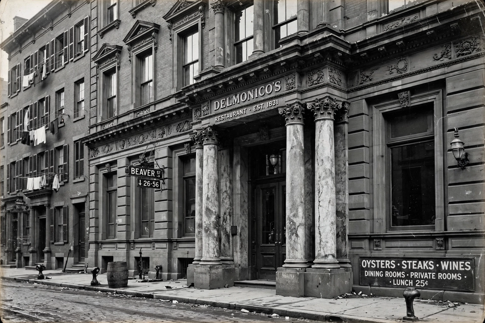

From Wikipedia, the free encyclopedia

| Delmonico's Restaurant | |
|---|---|
| Founded | 1827 (café); restaurant from 1830s, New York City |
| Founders | Giovanni (John) and Pietro (Peter) Delmonico |
| Noted chefs | Charles Ranhofer (1862–1894) |
| Signature dishes | Delmonico steak, Baked Alaska, Lobster Newberg, Eggs Benedict (claimed) |
| Status | Original family chain closed 1923; name revived at the Beaver Street location from 1926 onward |
Delmonico's is the name of a series of restaurants in New York City founded by the Swiss-Italian Delmonico brothers, beginning with a café and pastry shop opened in 1827 at 23 William Street. Widely regarded as the first fine-dining restaurant in the United States, Delmonico's introduced American diners to the French model of restaurant dining — individual tables, a printed à la carte menu, seasonal ingredients, and a professional kitchen brigade — and for much of the 19th century it was the most famous restaurant in America, the haunt of presidents, financiers, writers, and visiting dignitaries.
Giovanni (John) and Pietro (Peter) Delmonico, brothers from the Italian-speaking canton of Ticino, Switzerland, opened their first establishment in 1827 selling wine, coffee, and pastries. In 1831 they opened a "Restaurant Français" on William Street, and after fire destroyed the premises in 1835 they built a landmark multi-storey establishment at Beaver and South William Streets (opened 1837) with a grand restaurant, private dining rooms, a ballroom, and apartments. Under nephew Lorenzo Delmonico, the business expanded to as many as half a dozen locations, including branches near Wall Street, on Broadway at Morris Street, at Fifth Avenue and 14th Street, and later at Fifth Avenue and 44th Street.
Chef Charles Ranhofer, who joined in 1862 and led the kitchen for over three decades, codified Delmonico's cuisine in his enormous cookbook The Epicurean (1894), which lists more than 3,500 recipes and the menus of the restaurant's famous banquets — including dinners for Charles Dickens, President Ulysses S. Grant, and the Marquis de Lafayette's admirers, and the legendary "Swan Dinner." Delmonico's was also a social pioneer: in 1868 it hosted the first public dinner organised by women (the Sorosis club, after women journalists were barred from a press dinner elsewhere), helping open restaurant dining to unaccompanied women.
The family's last restaurant closed in 1923, a casualty of Prohibition and rising costs. The Beaver Street flagship was revived in 1926 by restaurateur Oscar Tucci ("Oscar of Delmonico's") and has operated under various owners since, reopening most recently in 2023 after a pandemic-era closure.
Delmonico's is credited with creating or popularising several enduring dishes:
Beyond individual dishes, Delmonico's established the template of the American grand restaurant — the model later followed by Le Pavillon, The Four Seasons, and the modern steakhouse — and lent its name generically to quality: for decades, imitators across America named restaurants "Delmonico's" whether or not they had any connection to the family.